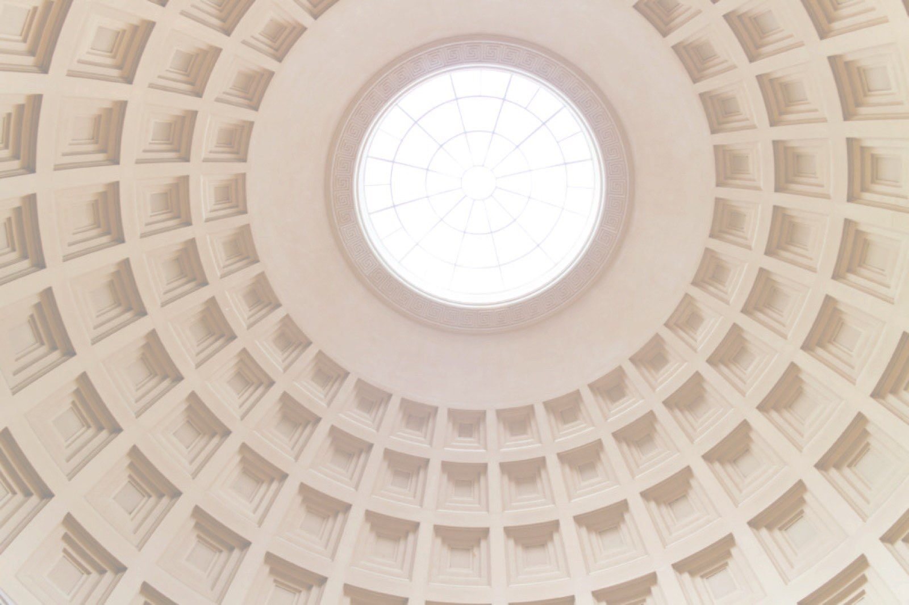

Strengthening the Transatlantic Relationship
The Bertelsmann Foundation North America is an independent, nonpartisan think tank dedicated to strengthening the transatlantic partnership and advancing dialogue on the global challenges shaping our future.
Programs

Program
Transatlantic Relations & Global Challenges
The transatlantic community is undergoing profound change. Geopolitical competition, economic shifts, technological disruption, and evolving political landscapes are reshaping the global environment and redefining cooperation.

Program
Future Leadership
Strong transatlantic leadership has never been more important. As the United States and Europe confront growing geopolitical uncertainty, effective leadership depends on trust, collaboration, and a shared understanding of the challenges ahead.
Featured projects
All projects
Data analysis platform · Transatlantic Relations
Transatlantic Barometer
A synopsis of the policy positions and engagement of 31 key transatlantic actors: the United States, Canada, the United Kingdom and the EU-27.

Interactive multimedia platform · Transatlantic Relations
Transatlantic Periscope
An interactive tool bringing together expert commentary, media coverage, official policy documents, quantitative data and gray literature on the transatlantic relationship.

Podcast & video series · Democracy
How to Fix Democracy
Since its origins, democracy has been a work in progress; today, many question its resilience. Interviews on democracy's past, present and future, with Humanity in Action and host Andrew Keen.

Fellowship · Future Leadership
The Bertelsmann Foundation Fellowship
A five-month transatlantic hybrid experience designed to foster connection and shared understanding among emerging leaders from the United States and Europe.
Insights
All insightsTransponder Magazine — Issue 7: The Future
The Bertelsmann Foundation's biannual magazine on the issues shaping the transatlantic relationship: short- and long-form articles, interviews and infographics.

Highlights

Report & documentary · Transatlantic Relations
Lithium Rising: The Race for Critical Minerals

Infographic · Transatlantic Relations
Strength in Numbers

Video · Future Leadership
Leadership in Action: Tzipi Livni on negotiating peace

Fellowship call · Future Leadership
Class of 2025: The Geopolitics of Space
Latest
Article · Transatlantic Relations
The Nuclear Option
Within Europe, Germany has remained an outlier in its staunch stance against nuclear energy, a position which has become a core pillar of its national identity.
Article · Transatlantic Relations
Meddle Meets Mettle
At first glance, the recent elections in Hungary and Slovenia had little in common.
Article · Transatlantic Relations
Open Debate and Unlikely Bedfellows
In his first campaign to become chairman of the CDU in 2018, Friedrich Merz, now Chancellor of Germany, made a promise.
Article · Democracy
What Comes After Z?
Throughout 2024 and 2025, Generation Z flooded streets around the world to protest government corruption.
Article · Transatlantic Relations
A Kettle Full of Steam
In a high-school auditorium, German Chancellor Friedrich Merz undid a year's worth of goodwill.
Article · Democracy
Misplaced Passion, Myopic Policy
The Free Democratic Party (FDP) has earned the moniker of “kingmaker” in German politics.